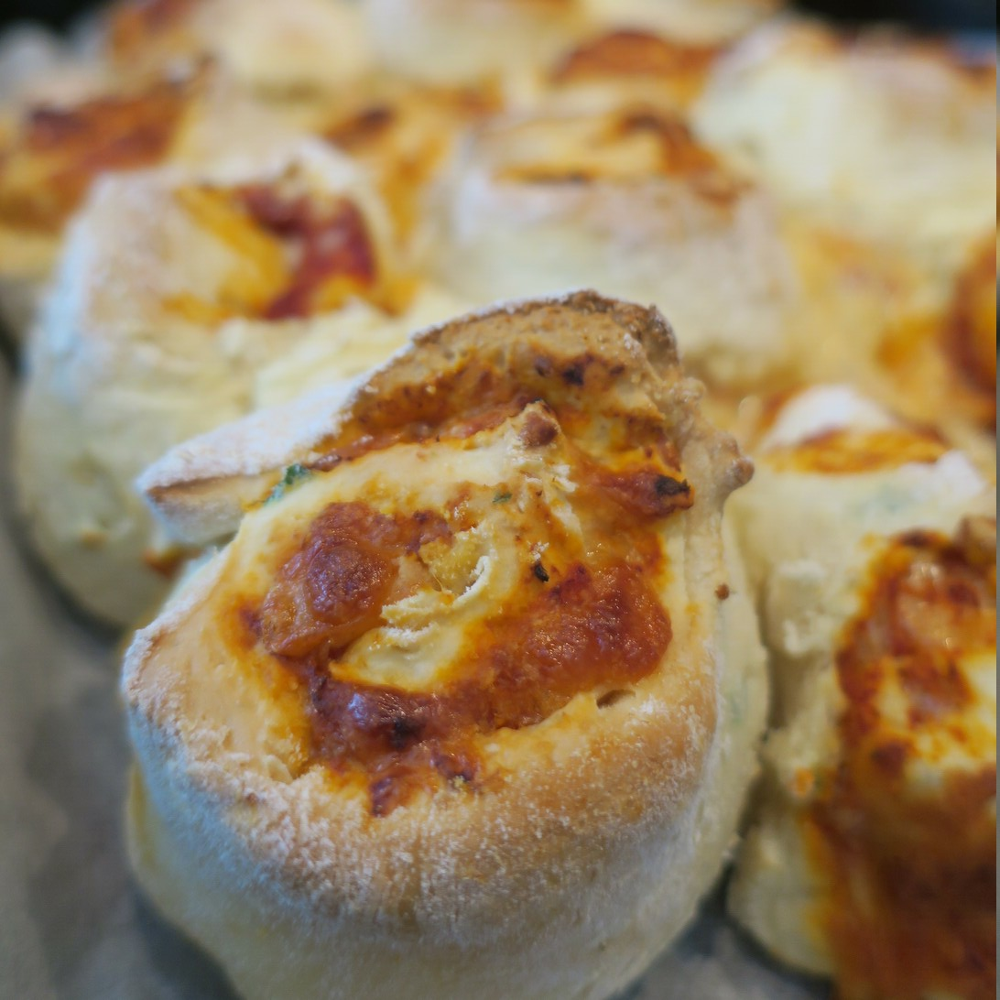

Pizza Scrolls

2 1/2 cupsself-raising flour2 tbspbutter2 tspherbs
Add flour to a bowl with butter and herbs
1 1/4cups milk
Stir in milk with a knife to make dough
Put heaps of flour on surface and knead dough
Roll into flat sheet
Make sure you make the roll doughed thin or it tastes too flourly.
- pizza sauce
- cheese
Add sauce and cheese on top
Roll into a roll and cut into pieces
Bake in oven